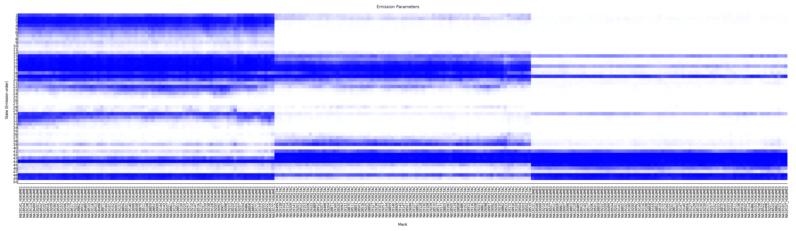
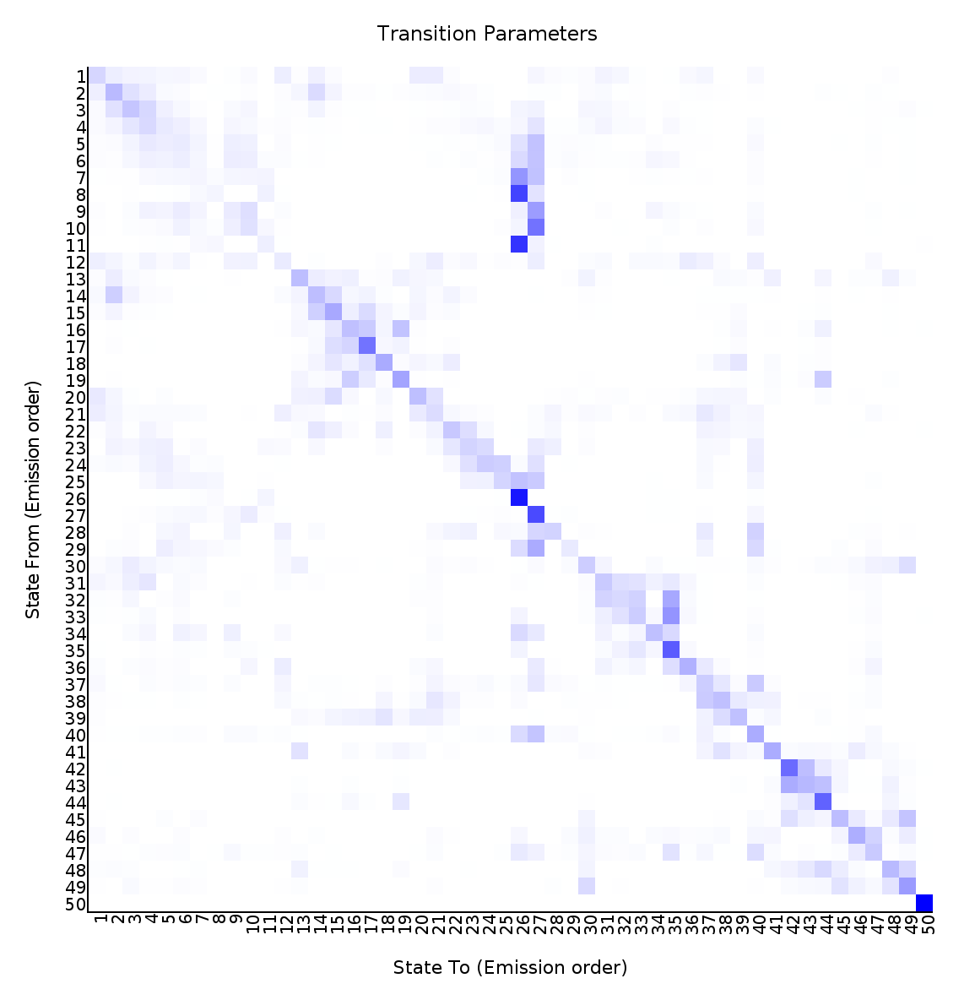

<center><h1>ChromHMM Report</h1></center>
Input Directory: snakemake_out/signal_binarized<br>
Output Directory: snakemake_out/learnmodel_out<br>
Number of States: 50<br>
Assembly: hg19<br>
Full ChromHMM command: LearnModel snakemake_out/signal_binarized snakemake_out/learnmodel_out 50 hg19
<h1>Model Parameters</h1>
<br>
<li><a href="emissions_50.svg">Emission Parameter SVG File</a><br>
<li><a href="emissions_50.txt">Emission Parameter Tab-Delimited Text File</a><br>
<br>
<li><a href="transitions_50.svg">Transition Parameter SVG File</a><br>
<li><a href="transitions_50.txt">Transition Parameter Tab-Delimited Text File</a><br><br>
<li><a href="model_50.txt">All Model Parameters Tab-Delimited Text File</a> <br>
<h1>Genome Segmentation Files</h1>
<li><a href="cell1_50_segments.bed">cell1_50 Segmentation File (Four Column Bed File)</a><br>
<br>
Custom Tracks for loading into the <a href="http://genome.ucsc.edu">UCSC Genome Browser</a>:<br>
<li><a href=cell1_50_dense.bed>cell1_50 Browser Custom Track Dense File</a> <br>
<li><a href=cell1_50_expanded.bed>cell1_50 Browser Custom Track Expanded File</a><br>
<h1>State Enrichments</h1>
<h2>cell1_50 Enrichments</h2>
